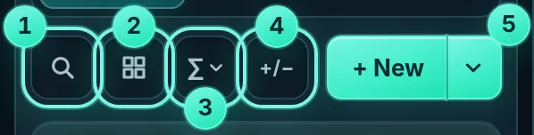
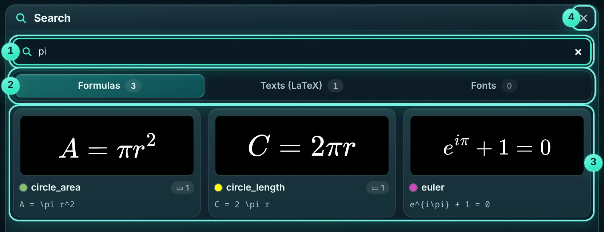
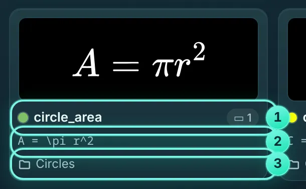
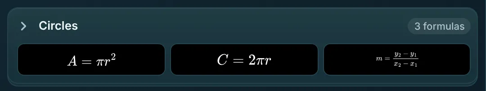
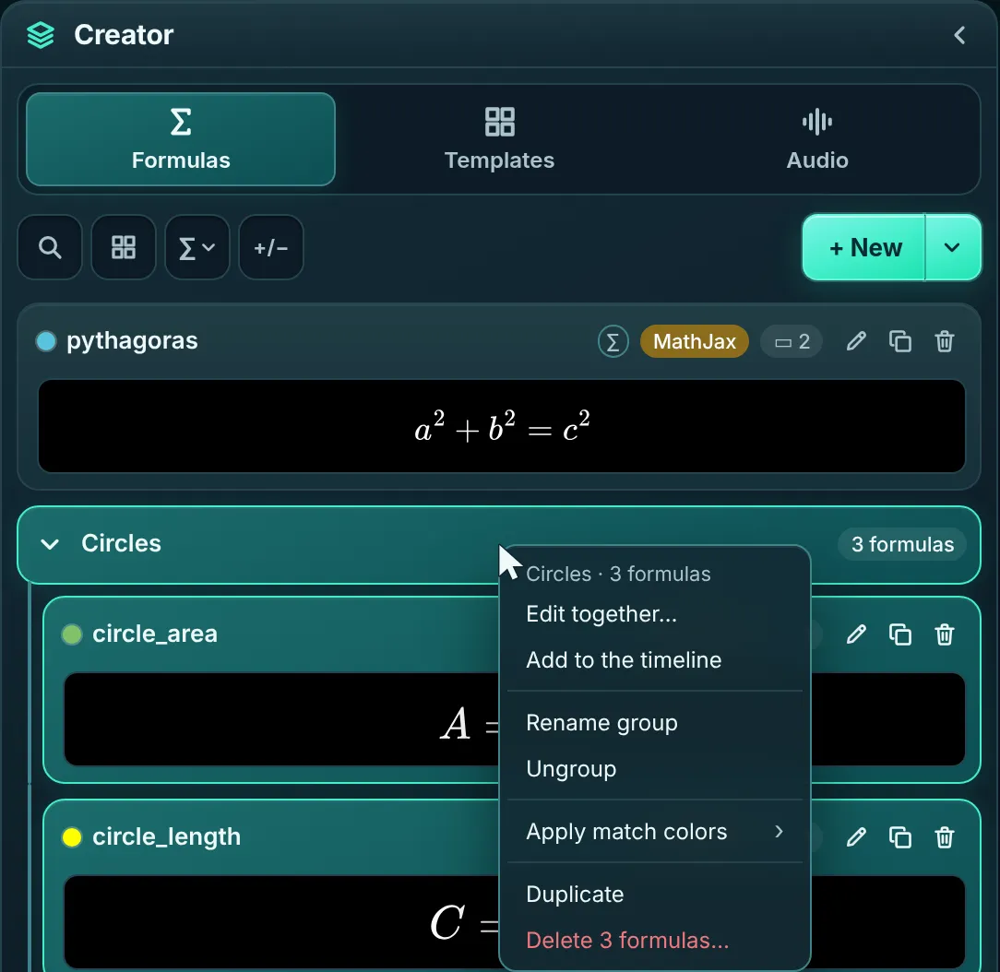
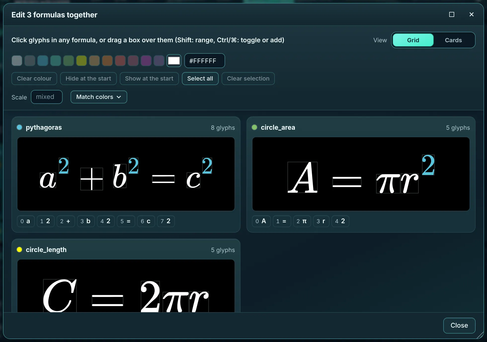
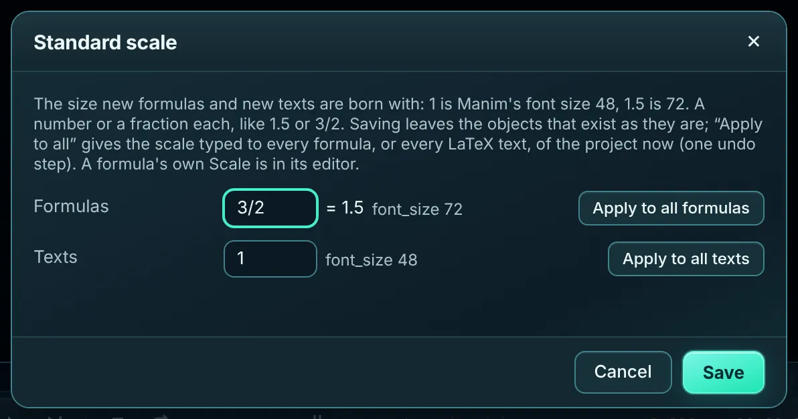

Finding and organizing
A project grows: nine formulas, then ninety. This page is about finding one, picking several at once, keeping them in order with groups, changing many together, and giving a clip a formula of its own.
The examples use a small project, Circles and triangles, with nine formulas and two LaTeX texts. Its card is at the end of the page; to follow along, choose File ▸ Open… and press Other file… in the dialog that opens (Projects and files explains it).
The Creator's toolbar

Everything below starts here. The magnifier opens the search, the key beside it switches between the list and the block view, showing the icon of the other (see Writing formulas), the ∑ key opens a menu to select a kind of object, +/− makes the previews larger with a click and smaller with a right-click, and + New makes one. In a Creator too narrow for all of it on one line, as it starts in a window of 1280 pixels (in one of 1440 or 1920 it is all on one line), the ∑ key and the key of the previews take a line of their own, under the magnifier.
Search
Press the magnifier, or Ctrl+F from anywhere (but over a dialog, where the browser's own find takes the key), and a panel comes up in the place of the Preview. The Preview is still there underneath, as you left it, and the rest of the app stays in use beside the search: the Creator, the Animations panel and the timeline all work while it is open.

- What you type is looked for in the names, in the sources of the objects (their LaTeX, or the text of a font text) and in the names of their groups, in the three tabs at once.
- The three tabs, Formulas, Texts (LaTeX) and Fonts, each say how many they found. With nothing typed, each lists every object of its kind.
- A result is a card: the drawing, the name, a line of the source, how many clips use it and the group it is in.

The panel is not a dialog, and a result is a card of the list in what it does:
- A click selects it; Ctrl+click and Shift+click select several, as in the list.
- A double-click, or Enter, opens its editor.
- A right-click opens the menu of the selected formulas: Edit together…, Add to the timeline, Group, Apply match colors, Duplicate and Delete N formulas…, under a line that says how many are selected.
- Drag it onto the timeline. The search stays open, so several can go one after another.
Close it with its close button, the magnifier or Esc. The tab and the text are there the next time, selected so that typing replaces them. While the search covers the Preview, the keys that act on the scene (align, the grid, the circle selector, align by symbol, colours in order) wait. The search is for the project in front of you: open another, and it closes and forgets its text.
Selecting by region
Drag from the empty space of the results (the gaps between the cards, or the margin around them) and a rectangle selects every card it touches:
- with no key, the cards become the selection;
- with Shift, they are added to it;
- with Ctrl, they are taken out of it.
The list may scroll under a held rectangle, with the wheel, and the rectangle stays on the cards it was drawn over. Esc gives the selection back as it was. A press on a card is still the card's: its click, and its drag onto the timeline.
Selecting in the list
The tools of this page act on what is selected, so here is how the cards of the Creator are selected, in the list and in the block view alike. The results of the search take the same clicks and keys.
- A click selects that card alone.
- Ctrl+click adds a card to the selection, or takes it out when it is in.
- Shift+click selects the range from the card you clicked last to this one; with Ctrl too, the range is added to what is selected. A group's row counts as one card in a range, and brings all its formulas.
The keyboard does the same on the card that has the focus: click a card, or press Tab to reach the list.
| Keys | What they do |
|---|---|
| ↑ ↓, Home, End | Move to the previous or next card, or to the first or the last, and select it. |
| Shift with those keys | Select the range from the card you last clicked or selected by key. |
| Ctrl with those keys | Move the focus and leave the selection as it is. |
| Space | Select the card that has the focus. |
| Ctrl+Space | Add the card to the selection, or take it out. |
| ← → | In the block view and in the results of the search, move to the previous or next block or card; ↑ ↓ then move a whole row of them. |
On a group's row, Enter opens and closes the group; see Groups in the Creator.
By region, in the list
The list takes the rectangle of the search too, in the list view and in the block view alike. Drag from its empty space (its margins, the gaps between the cards, the room under the last one) and every card it touches is selected, with the same keys: none to replace the selection, Shift to add, Ctrl to take out. Esc gives the selection back, and the rectangle stays on its cards while the list scrolls.
In the list view the cards fill the width, so there is little empty space: hold Alt and the rectangle may start on a card too. That card is then not dragged onto the timeline, and a click with Alt that does not move is still a click. A group's row is not selected by a rectangle, nor are the formulas of a closed group, which are not drawn: open the group first.
Select by kind
One key of the toolbar, left of + New, wears ∑ and a small arrow. Point at it and a menu drops under it with a row per kind: ∑ Formulas, T LaTeX texts and P Font texts. A row adds every object of its kind in the project to the selection, those in a closed group too, and whatever the search shows.
- The menu stays open after a choice: two rows chosen one after the other select both kinds.
- A row is ticked while all of its kind is selected, and the ∑ key is lit; chosen then, the row takes that kind out and leaves the rest.
- A row is off while the project has none of its kind, and says so in its tooltip.
- The menu closes once the pointer has left it and the key, on Esc, and on a click elsewhere.
- Without hovering: click the key, tap it, or reach it with Tab and press Enter; ↑ and ↓ walk the rows, Enter or Space chooses.
- Braces, shapes and lines are of none of the three; they live with their clips.
With a kind selected, the right-click menu of the Creator acts on all of it: Group, Edit together…, Add to the timeline or Delete N formulas….
Groups in the Creator
A group is one row of the Creator that holds several formulas. It keeps the list in order and changes nothing else: the scene, the timeline and the exported Python are the same with or without groups. Groups are saved with the project.

- Group, in the menu of two or more selected formulas, makes one row of them where the first was.
It is called
grp1until you rename it, with the drawings of its first three formulas and how many it has. - Its arrow opens it onto its formulas and closes it again. So do a double-click on the row, Enter and, in the list view, the arrow keys → and ←.
- Rename it with F2, a double-click on its name, or Rename group in its menu.
- A group is selected as its formulas: click it, and the menu acts on all of them (Add to the timeline puts a clip of each at the playhead, Edit together…, Apply match colors, Duplicate, Delete N formulas…).

To change what is in a group, without undoing it:
- Add to group, a submenu in the menu of selected formulas, lists the groups there are and puts them in the one you choose, while one of them is in none. Dropping a formula from the list on the row of a group does the same.
- Remove from group sets them free.
- Ungroup, on the row of a group, leaves all its formulas on their own again. None is deleted.
A formula is in one group at most. The copy of a formula in a group stays in it, deleting a formula takes it out of its group, and a group left with no formulas goes. A group is not dragged onto the timeline: use Add to the timeline. In the block view a group is a block, and its formulas' blocks come after it while it is open.
Edit together
Select several formulas or texts, right-click one and choose Edit together…. One dialog shows the glyphs of all of them, to colour or hide glyphs of every formula at once. You can also open it from the timeline, on the clips of several formulas.

- Select glyphs as in the formula editor: click, Shift+click for a range, Ctrl+click to toggle, or drag a box over the glyphs of every formula it touches (Ctrl adds). The bar says how many are selected, in how many formulas.
- Choose a colour for all of them, or Clear colour, or Hide at the start and Show at the start. Each action is one undo step, and Ctrl+Z works while the dialog is open.
- Grid and Cards change the layout: all the formulas at once, or one big card each that the wheel moves through.
Two tools act on the whole formulas, whatever glyphs are selected, each as one undo step:
- Scale gives all of them one scale, as the formula editor's Size does. It is empty, saying mixed, while theirs differ. Opened from the timeline on braces, shapes or lines too, the dialog leaves those out and says how many.
- Match colors lists the project's match lists, each with its colours, and applies the one you choose to every formula. It is off when one of them takes no match colours (a font text, a brace); with no list yet, Create match colors… closes the dialog and opens the lists. See Match colors.
Standard scale
New formulas and new LaTeX texts are born with a size: 1 is Manim's font size 48. The standard scale is the size they start with, one for formulas and one for LaTeX texts. Open Preferences ▸ Standard scale….

- Type a number or a fraction:
1.5or3/2, from 0.1 to 10. The dialog shows the value and the font size it means. - Save keeps it for the objects you create from now on. The ones that exist stay as they are.
- Apply to all formulas (or Apply to all texts) gives that scale to every formula, or every LaTeX text, the project has now, whatever its own. First it asks, and the question says how many change, how many have that scale already, and lists each with the scale it has now.
It is one undo step, whether you then save the dialog or cancel it. The clips keep their own scale and their animations. A font text has no standard scale and is left out. To change one formula's size, use its Size in the formula editor.
Duplicate, and unlink a clip from its formula
Duplicate, in the menu of selected formulas and on the button of a card, makes a copy of each formula right after it in the Creator, and in its group, under the next free name. It copies the formula and not its clips.
A clip is another matter. A formula on the timeline more than once is one object that all its clips show: edit it, and every clip changes. That is usually what you want. When it is not, Unlink formula (make a copy), in the menu of a clip, gives that clip a copy of the formula of its own.
- The entry is in the menu of a clip on the timeline and in the Preview, and in the menu of selected clips. It reads Unlink formula (make a copy), or Unlink formulas (make N copies) when the clips belong to several formulas.
- Several selected clips of one formula share one copy, and its clips outside the selection keep the original.
- The copy is named as Duplicate names it, comes after the original in the Creator, and has its glyphs: the clip keeps its relations, its animation blocks, its glyph colours and the objects attached to it, exactly as they were.
- The entry is off, with a tooltip that says why, when the clip is the formula's only one, or all of its clips are selected, or its track is locked. Braces, shapes and lines have no such entry.
- One undo step, Ctrl+Z, takes it back: the clip returns to the original and the copy goes.
pythagoras2, edited to x² + y² = r²; the last clip still holds pythagoras.The project that the examples of this page use, with nine formulas and two LaTeX texts, is here to download:
Where to go next
- Writing formulas, for the editor of one formula.
- The template library, for formulas that start from a template.
- Match colors, for colouring glyphs by pattern across formulas.
- Timing tools, for the other menus of a clip.